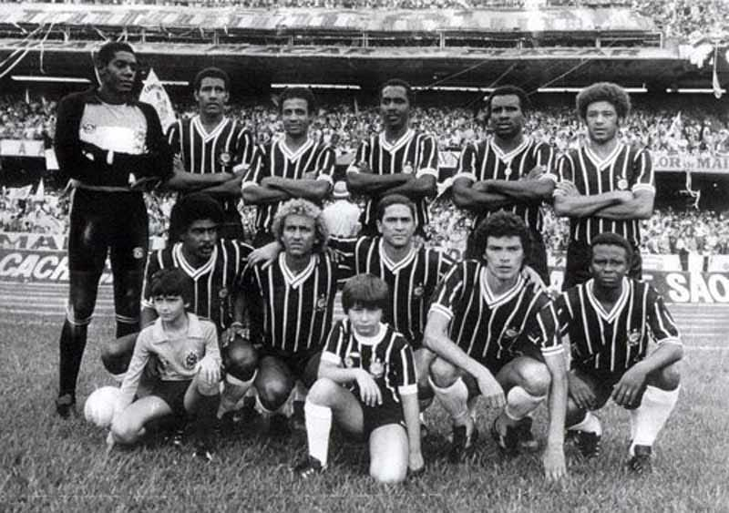
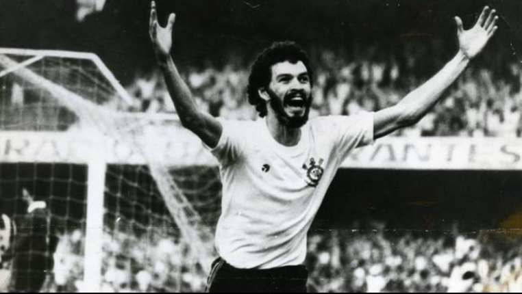
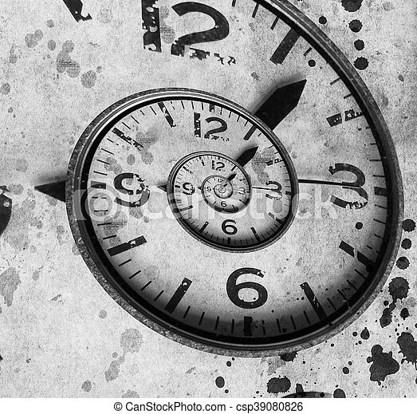
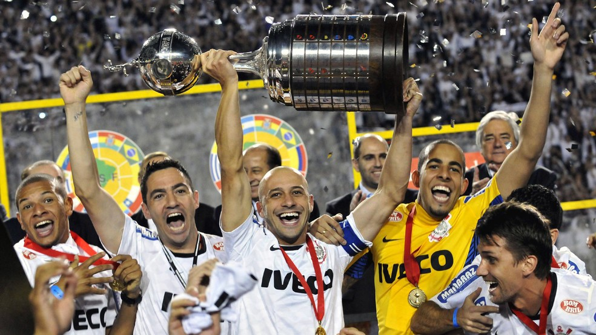

Às 20h30 do dia 1º de setembro, à luz de um lampião, na esquina das ruas José Paulino e Cônego Martins, no bairro do Bom Retiro, o grupo de operários formado por Anselmo Corrêa, Antônio Pereira, Carlos Silva,
Joaquim Ambrósio e Raphael Perrone fundaram o Sport Club Corinthians Paulista. Com mais oito rapazes, foi formada a reunião dos primeiros integrantes e sócio-fundadores do Timão, que teve seu nome inspirado na equipe inglesa Corinthian-Casuals Football Club, que fazia excursão pelo Brasil.
O presidente escolhido por eles foi o alfaiate Miguel Battaglia, que, já no primeiro momento, afirmou: “O Corinthians vai ser o time do povo e o povo é quem vai fazer o time”.
Um terreno alugado na Rua José Paulino foi aplainado, virou campo e foi lá que, já no dia 14 de setembro,o primeiro treino foi realizado diante de uma plateia entusiasmada, que garantiu: “Este veio para ficar!”.
Primeiro jogo do Timão fora da cidade de São Paulo. Na manhã de 17 de setembro, vitória sobre a Ponte Preta em Campinas por 1 a 0.
Pela primeira vez, o Corinthians participou do campeonato da Liga Paulista de Futebol. O Alvinegro terminou em quarto lugar entre cinco equipes
Primeiro título do Sport Club Corinthians Paulista. Com 10 vitórias em 10 jogos disputados,
o Timão marcou 37 gols e venceu a última partida por 3 a 0, contra o Lusitano, no Parque Antártica. O atacante Neco foi o artilheiro do torneio com 12 gols.
O Alvinegro conquistou o Campeonato Paulista com uma rodada de antecedência. No dia 08 de novembro, a equipe derrotou o Campos Elyseos por 4 a 0 e sagrou-se campeã com a seguinte escalação: Aristides,
Fúlvio e Casemiro González; Police, Bianco e César Nunes; Américo, Peres, Amílcar, Apparício e Neco.
O Alvinegro deixou a Liga Paulista de Futebol por conta de uma vaga desejada no campeonato da Associação Paulista de Esportes Atléticos,
onde jogavam os grandes times da época. Porém, ficou de fora das duas competições.
De volta ao campeonato da Liga Paulista de Futebol, o Timão foi novamente campeão com 100% de aproveitamento: nove vitórias em nove jogos.
Apparício foi o artilheiro do torneio com sete gols.
A história é longa e repleta de vitórias e conquistas, mais vamos aos mais importantes
Pela primeira vez na história, o Corinthians foi campeão da Libertadores. E, para ser perfeito, de forma invicta! Foram 22 gols marcados e apenas quatro sofridos em oito vitórias e seis empates.
Em dezembro, o Bando de Loucos invadiu o Japão e viu o Corinthians conquistar o Mundial de Clubes da Fifa pela segunda vez.
Guerrero marcou de cabeça e garantiu o título contra o Chelsea no ano que se tornou inesquecível para a Fiel Torcida.